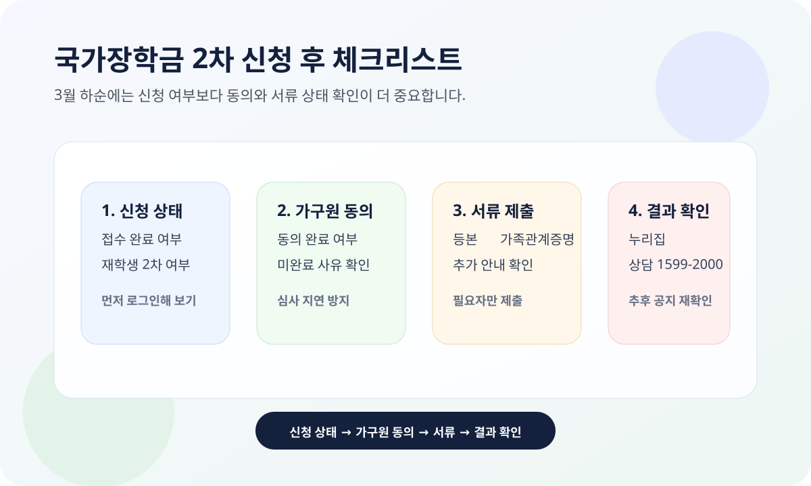

국가장학금 2차 신청은 검색량이 큰 키워드지만, 2026년 3월 23일 현재는 신청 자체보다 내가 이미 신청했는지, 가구원 동의와 서류 제출이 끝났는지를 먼저 보는 편이 중요합니다.
이 글은 한국장학재단 국가장학금 I유형 공식 안내와 재단 공지사항을 기준으로 정리했습니다. 신청 일정과 제출 기한은 학기마다 달라질 수 있으니, 실제 확인은 반드시 재단 공식 페이지에서 다시 하세요.

재학생은 왜 1차 원칙을 먼저 알아야 하나요?
한국장학재단 국가장학금 I유형 안내에는 재학생은 원칙적으로 1차 신청 기간에만 신청 가능하다고 적혀 있습니다. 다만 같은 페이지에는 2차 신청자는 재학 중 2회에 한해 구제신청 자동 적용 및 심사 후 지원 가능이라고 안내돼 있습니다.
즉, 재학생이 2차에 신청했다고 해서 무조건 탈락으로 보는 것은 맞지 않습니다. 다만 재학 중 자동 구제 적용 횟수와 별도 탈락 사유 여부를 같이 봐야 해서, 단순히 “신청했다”에서 멈추면 안 됩니다.
2026년 3월 하순에 가장 먼저 확인할 것
- 신청 완료 여부: 재단 누리집 또는 앱에서 접수 상태 확인
- 가구원 정보 제공 동의: 미완료면 심사 진행이 늦어질 수 있음
- 추가 필요서류: 가족정보가 공적 정보와 다르면 제출 필요
- 재학생 여부: 1차 원칙과 2차 자동 구제 적용 여부 확인
- 결과 확인 경로: 재단 누리집, 전화상담, 지역센터
특히 서류와 가구원 동의는 신청 이후에도 놓치기 쉬운 단계입니다. 한국장학재단은 공지와 안내문에서 문자 안내가 오지 않더라도 누리집에서 직접 상태를 확인하라는 흐름으로 운영하고 있어서, 접수 직후 며칠 뒤 한 번 더 보는 것이 안전합니다.
서류와 가구원 동의가 중요한 이유
한국장학재단 보도자료와 안내 페이지를 보면, 장학금 심사는 가구원 정보 제공 동의와 필요서류 제출이 완료되어야 다음 단계로 넘어갑니다. 가족정보가 공적 정보와 다른 경우에는 주민등록등본이나 가족관계증명서 같은 추가 서류가 필요할 수 있습니다.
따라서 “신청 버튼은 눌렀는데 왜 진행이 안 되지?”라는 경우에는 먼저 가구원 동의현황과 서류제출현황을 확인하는 편이 맞습니다.
신청을 놓쳤다면 어떻게 보나요?
2026년 1학기 2차 신청 자체를 완전히 놓쳤다면, 지금 시점에는 당해 학기 2차 추가 신청을 기대하기보다 다음 학기 1차 일정을 준비하는 쪽이 현실적입니다. 재학생은 1차 신청 원칙이 있기 때문에, 다음 학기에는 일정이 열리자마자 바로 신청하는 편이 안전합니다.
또 학교 자체 장학금, 교내 근로장학, 지방자치단체 학자금 지원처럼 별도 장학 제도가 있는지도 같이 확인하면 좋습니다. 국가장학금만 놓고 기다리기보다 학교 공지와 재단 공지를 같이 보는 편이 실제 도움이 됩니다.
한 번에 요약하면
- 재학생은 1차 신청이 원칙입니다.
- 재학생 2차 신청자는 재학 중 2회에 한해 자동 구제 적용 후 심사가 가능합니다.
- 3월 하순에는 가구원 동의, 추가 서류, 신청 상태 확인이 핵심입니다.
- 2차 신청을 완전히 놓쳤다면 다음 학기 1차 일정과 학교 자체 장학 제도를 같이 보는 편이 현실적입니다.
- 제출 기한과 지원 기준은 바뀔 수 있으니 재단 공식 페이지를 다시 확인해야 합니다.
자주 묻는 질문
Q. 재학생이 2차에 신청하면 무조건 안 되나요?
그렇지는 않습니다. 한국장학재단 안내에는 재학생은 1차 신청이 원칙이지만, 2차 신청자는 재학 중 2회에 한해 자동 구제 적용 후 심사할 수 있다고 나와 있습니다.
Q. 신청만 하면 끝인가요?
아닙니다. 가구원 정보 제공 동의와 추가 필요서류 제출 여부를 같이 확인해야 합니다.
Q. 지금 가장 빨리 확인할 곳은 어디인가요?
한국장학재단 국가장학금 안내 페이지, 공지사항, 그리고 본인 계정의 신청 상태 화면입니다.
공식 링크
국가장학금 신청 일정, 서류 제출 기한, 지원 기준은 학기마다 바뀔 수 있습니다. 실제 제출이나 상담 전에는 위 공식 페이지의 최신 공지와 본인 신청 상태를 다시 확인하세요.